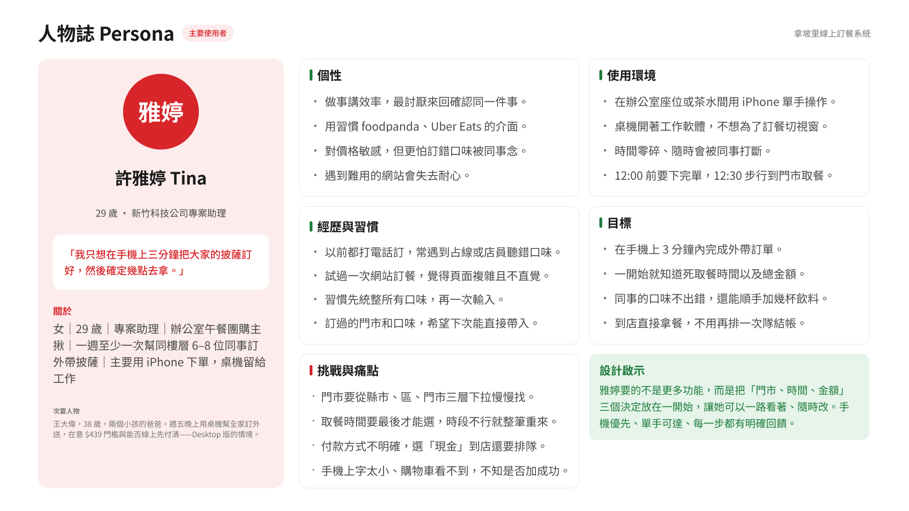
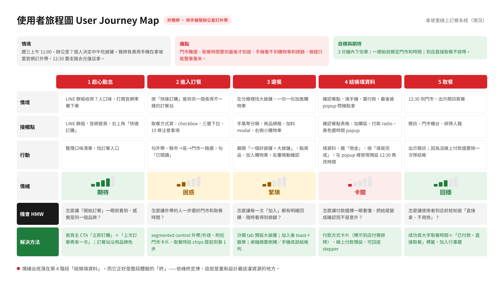
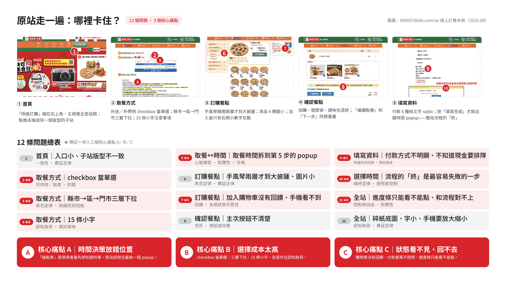

研究與分析
透過使用者分析，從梳理使用的流程到最後的歸納核心痛點，我培養了如何以使用者為核心設計思考，也學習到從經驗出發去規劃，我也必須要有系統性的整理資料，建立清楚的問題脈絡，後續的介面設計才可以有明確的參考方向。

Persona
透過訪問身邊有使用過拿波里訂餐系統的人，還有結合自己的使用經驗，整理出使用者需求、習慣與痛點，建立出一個假設性Persona，作為後續改善介面與操作流程的參考。

User Journey Map
以使用者訂餐流程為主軸，從起心動念、訂餐到最後完成取餐，梳理了各階段的操作與情緒感受，藉此了解主要痛點與解決方法。

Current Problems
在實際操作訂餐系統後（依序從首頁、選擇取餐方式、訂購餐點到完成結帳），我總共整理出了12個問題，經過分類後，歸納出了三個核心痛點：取餐時間出現過晚、選擇成本過高以及操作狀態不明確。